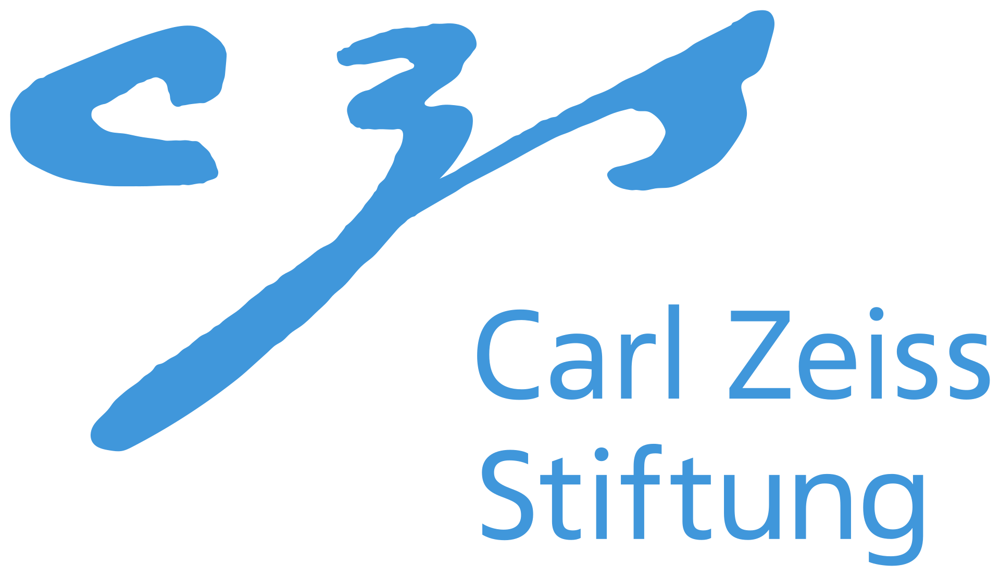

Acknowledgments

We thank Chuqiao Li and István Sárándi for their helpful discussions and proofreading. We also thank Junyu Zhang for valuable discussions regarding the G1 policy training. The project was made possible by funding from the Carl Zeiss Foundation. This work is supported by the Deutsche Forschungsgemeinschaft (DFG, German Research Foundation) - 409792180 (Emmy Noether Programme, project: Real Virtual Humans) and the German Federal Ministry of Education and Research (BMBF): Tübingen AI Center, FKZ: 01IS18039A. JEL is supported by the German Research Foundation (DFG) - 556415750 (Emmy Noether Programme, project: Spatial Modeling and Reasoning). GPM is a member of the Machine Learning Cluster of Excellence, EXC number 2064/1 - Project number 390727645. This work was supported by the Engineering and Physical Sciences Research Council [grant number EP/X011364/1]. T. B. was supported by a UKRI Future Leaders Fellowship (MR/Y018818/1) as well as a Royal Society Research Grant (RG/R1/241402).
BibTeX
@misc{he2025molingo,
title={MoLingo: Motion-Language Alignment for Text-to-Motion Generation},
author={Yannan He and Garvita Tiwari and Xiaohan Zhang and Pankaj Bora and Tolga Birdal and Jan Eric Lenssen and Gerard Pons-Moll},
year={2025},
eprint={2512.13840},
archivePrefix={arXiv},
primaryClass={cs.CV},
url={https://arxiv.org/abs/2512.13840},
}